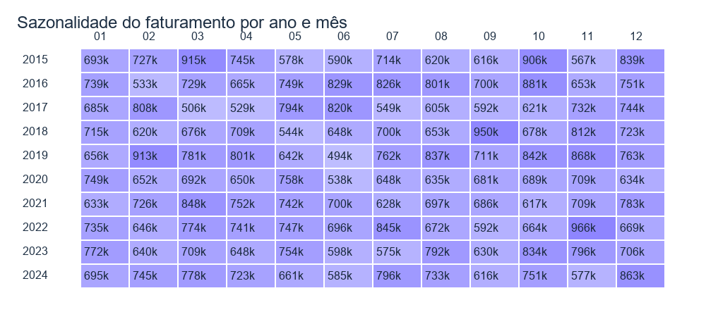
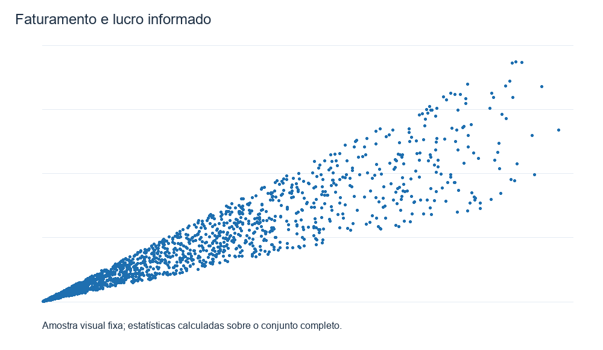
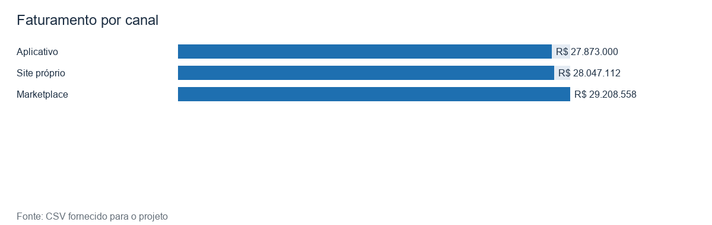

1. Evolução temporal
A evolução mensal permite identificar crescimento e períodos de pico.

Aplicação analítica construída em Python para investigar faturamento, lucro, produtos, categorias, regiões, canais, sazonalidade, logística e satisfação do cliente entre 2015 e 2024.
A base é simulada e reproduzível. O CSV oficial do professor não acompanha o PDF da avaliação disponibilizado para este projeto.
A evolução mensal permite identificar crescimento e períodos de pico.
Comparação de faturamento por categoria.

Comparação regional e concentração de receita.

Heatmap de faturamento por ano e mês.

Relação financeira entre receita e resultado.

Desempenho financeiro dos canais.

KPIs dinâmicos, seis filtros, análise temporal, comparações por região, estado e categoria, ranking de produtos, análise de lucro, logística, correlação, tabela detalhada e downloads CSV.
Python, Pandas, NumPy, Matplotlib, Seaborn, Streamlit, Plotly, SQLAlchemy e SQLite.